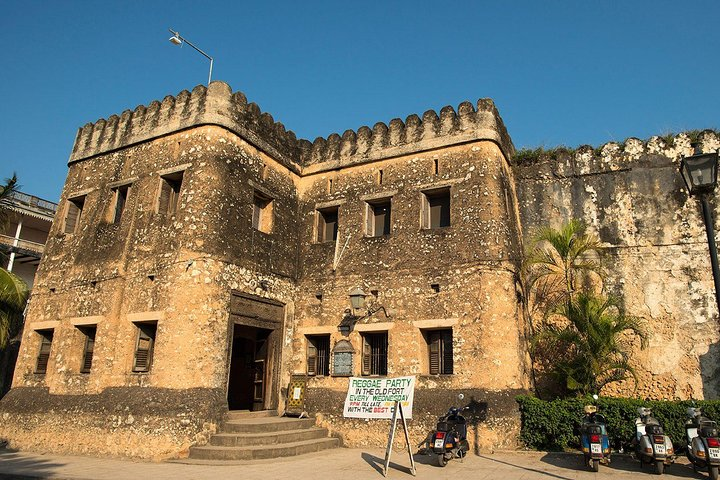
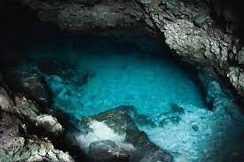
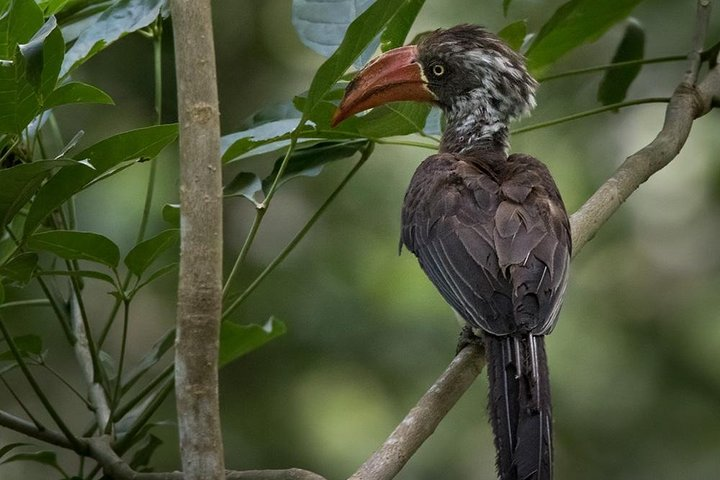

The Arab Fort in Zanzibar Town

The Jozani Forest Zanzibar
Mkunazini in Zanzibar Town
Prison Island Tour in Zanzibar

Kizimkazi Cave
Ngezi National Park Pemba
Kizimkazi Mosque in Zanzibar

The Jozani Forest Zanzibar
Beit al-Ajaib in Zanzibar Town
